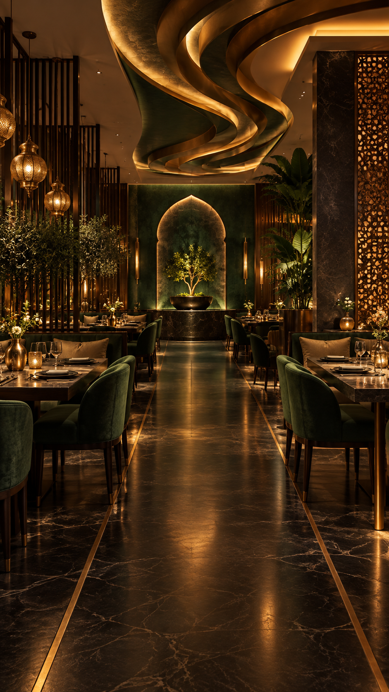
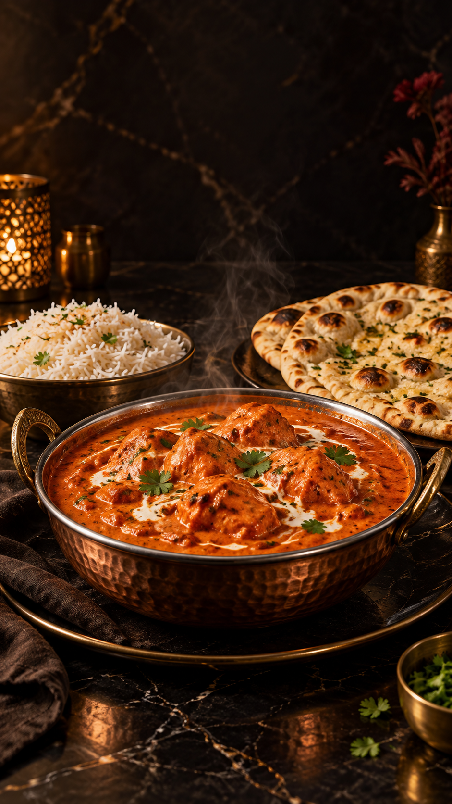

Courtyard Butter Chicken ₹495
Charred chicken, tomato, fenugreek, cultured butter
CONTEMPORARY INDIAN DINING · HYDERABAD
A warm courtyard, time-honoured recipes and bold regional flavours—reimagined for today.
OUR PHILOSOPHY
Our kitchen draws inspiration from family recipes across India. We source thoughtfully, grind our spices in-house and cook each dish with patience. Whether it’s a quiet dinner or a joyful celebration, we make every table feel like the best seat in the courtyard.
AT THE COURTYARD


VISIT US
12 Jubilee Courtyard
Jubilee Hills, Hyderabad
Mon–Thu: 12 pm–11 pm
Fri–Sun: 12 pm–12 am
hello@spicecourtyard.demo
DEMO EXPERIENCE CREATED BY RJ Digital Solutions
Complete business websites from ₹5,999 · digital menus · social creatives · premium web design
Build my business website →